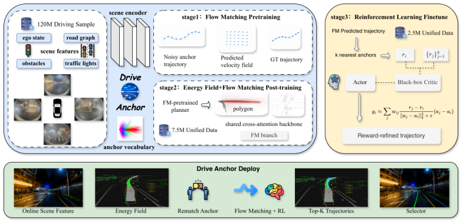

Hi, welcome to my homepage.
Biography
I am an M.S. student in Applied Mathematics at the School of Mathematics and Statistics, Xi'an Jiaotong University (XJTU). My research interests include World Action Models, Reinforcement Learning, and Embodied Intelligence.
I have worked on embodied reinforcement learning and world-model navigation at the Institute of Automation, Chinese Academy of Sciences (CASIA); at Meituan, I worked on large-scale pretraining for multimodal trajectory generation with Flow Matching, followed by post-training with Energy-Field guidance and reinforcement learning; and at LinkerBot, I worked on DexLeWM post-training to adapt pretrained VLA/WAM capabilities to coordinated dexterous manipulation.
I am interested in building unified world representations for robots. I welcome research discussions and academic collaboration; feel free to reach me by e-mail.
I am currently seeking research internship opportunities. If you think my background could be a good fit for your team or project, please feel free to contact me by e-mail.
News
- Our paper DriveAnchor: Progressive Anchor-based Flow Learning for Autonomous Driving Planning is available on arXiv.
- Our paper HaM-World: Soft-Hamiltonian World Models with Selective Memory for Planning is available on arXiv, with code released.
- Our paper Spatial Sampling-based Passivity and Synchronization of Multiweighted Coupled Reaction-diffusion Neural Networks was accepted by CNSNS.
- Our paper Adaptive Passivity-based Synchronization of Spatiotemporal Neural Networks with Multi-weighted Coupling under Spatially Point Measurements was accepted by CISC 2025.
Selected Publications
-
arXiv 2026

DriveAnchor: Progressive Anchor-based Flow Learning for Autonomous Driving Planning * Equal contribution. † Lead corresponding author. ‡ Co-corresponding author. arXiv:2606.00519, 2026@article{yan2026driveanchor, title={DriveAnchor: Progressive Anchor-based Flow Learning for Autonomous Driving Planning}, author={Yan, Limin and Tang, Haoyun and Qiu, Yutao and Liu, Hongqing and Xu, Haoyu}, journal={arXiv preprint arXiv:2606.00519}, year={2026} } -
arXiv 2026
 HaM-World: Soft-Hamiltonian World Models with Selective Memory for Planning * Equal contribution. † Corresponding authors. arXiv:2605.05951, 2026
HaM-World: Soft-Hamiltonian World Models with Selective Memory for Planning * Equal contribution. † Corresponding authors. arXiv:2605.05951, 2026@article{tang2026hamworld, title={HaM-World: Soft-Hamiltonian World Models with Selective Memory for Planning}, author={Tang, Haoyun and Cui, Haodong and Xu, Keyao and Wang, Kun and Mei, Zhandong}, journal={arXiv preprint arXiv:2605.05951}, year={2026} } -
CNSNS 2026
 Spatial Sampling-based Passivity and Synchronization of Multiweighted Coupled Reaction-diffusion Neural Networks † Corresponding author. Communications in Nonlinear Science and Numerical Simulation, 2026
Spatial Sampling-based Passivity and Synchronization of Multiweighted Coupled Reaction-diffusion Neural Networks † Corresponding author. Communications in Nonlinear Science and Numerical Simulation, 2026@article{cui2026spatial, title={Spatial Sampling-based Passivity and Synchronization of Multiweighted Coupled Reaction-diffusion Neural Networks}, author={Cui, Haodong and Tang, Haoyun and Ma, Mingyu and Hu, Cheng and Shi, Tingting}, journal={Communications in Nonlinear Science and Numerical Simulation}, volume={157}, pages={109666}, year={2026}, doi={10.1016/j.cnsns.2026.109666} } -
CISC 2025
 Adaptive Passivity-based Synchronization of Spatiotemporal Neural Networks with Multi-weighted Coupling under Spatially Point Measurements † Corresponding author. Chinese Intelligent Systems Conference (CISC 2025), 2026
Adaptive Passivity-based Synchronization of Spatiotemporal Neural Networks with Multi-weighted Coupling under Spatially Point Measurements † Corresponding author. Chinese Intelligent Systems Conference (CISC 2025), 2026@inproceedings{tang2026adaptive, title={Adaptive Passivity-based Synchronization of Spatiotemporal Neural Networks with Multi-weighted Coupling under Spatially Point Measurements}, author={Tang, Haoyun and Cui, Haodong and Ma, Mingyu and Hu, Cheng and Shi, Tingting}, booktitle={Proceedings of 2025 Chinese Intelligent Systems Conference}, pages={266--276}, year={2026}, publisher={Springer Nature Singapore}, doi={10.1007/978-981-95-6813-0_26} }
Education


Research & Industry Experience


Selected Awards & Honors
- Meritorious Winner, Mathematical Contest in Modeling (MCM), 2025 [PDF]
- Provincial Special Prize, China Undergraduate Mathematical Contest in Modeling (CUMCM), 2023
- Provincial First Prize, National College Student Mathematics Competition, 2024
- Provincial Second Prize, National College Student Market Research and Analysis Competition, 2024
- Provincial Second Prize, National Undergraduate Statistical Modeling Competition, 2024
- National Second Prize, Asia and Pacific Mathematical Contest in Modeling (APMCM), 2024
- National Third Prize, HuaShu Cup Mathematical Modeling Competition, 2024
- Jinlongyu Academic Scholarship, 2025
Selected Projects
-
Car Obstacle Avoidance Navigation (DreamV3) [Demo] Keywords: DreamV3, Autonomous Navigation, Obstacle Avoidance, Reinforcement Learning Built a small-car navigation project using DreamV3-style world model reinforcement learning for obstacle avoidance and autonomous route following in a structured driving environment.
-
UAV Obstacle Avoidance Navigation (SAC) [Demo] Keywords: UAV, SAC, Obstacle Avoidance, Reinforcement Learning Built a UAV obstacle avoidance navigation experiment using Soft Actor-Critic to learn collision-aware flight behavior in a structured simulation environment.
-

Road2Gen-Drive (MetaDrive IL+RL / GAIL) [GitHub] Keywords: MetaDrive, Behavior Cloning, PPO, GAIL, Generalization Built end-to-end autonomous driving experiments in MetaDrive with two independent pipelines: IL+RL (BC pretraining + PPO fine-tuning) and GAIL for adversarial imitation learning and generalization evaluation.
-

Multi-UAV Collaborative Surrounding (MAPPO + AirSim) [GitHub] Keywords: AirSim, MAPPO, Multi-UAV, Curriculum Learning Built a 3v1 multi-UAV cooperative surrounding environment in AirSim and a MAPPO training pipeline with curriculum learning and tailored reward design.
Hobbies & Interests
Outside research, I enjoy suspense and science-fiction films. I also play basketball as a starting power forward, with two college tournament championships, and keep active through running, badminton, swimming, and hiking.